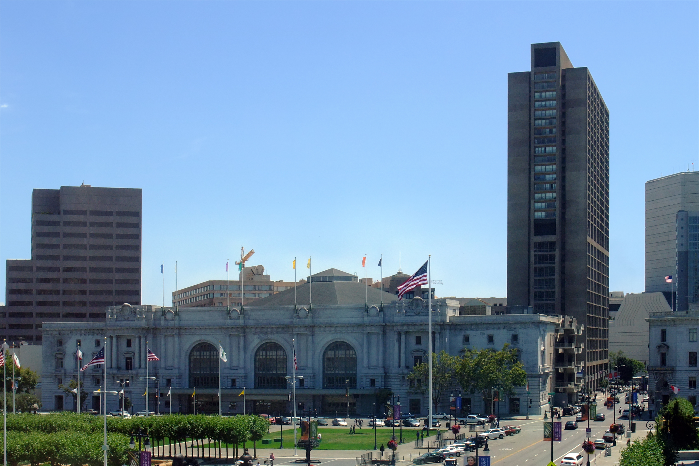

The first TechCon event in 2005, San Francisco.
TechCon was first conceptualized in 2005 by a group of technology enthusiasts who saw the need for a dedicated platform where tech professionals could converge to share knowledge, network, and showcase innovations. The first TechCon was held in San Francisco, California, with just a few hundred attendees. Despite its modest beginning, the inaugural event set the stage for what would become one of the most influential technology conferences in the world.
Mission and Objectives and Driving Principles of TechCon
yes we can
Objectives:
Provide updated and new information on the latest technological developments.
Encourage innovation by showcasing new ideas and pioneering projects.
Offer a platform for professionals and innovators in the tech field to connect and exchange ideas and experiences.
Driving Principles:
Ensure that the conference is accessible to a broad and diverse audience, including different genders, races, and professional backgrounds.
Promote diverse perspectives and voices within the tech community.
Strive for excellence in all aspects of the conference, from the quality of speakers and sessions to the overall attendee experience.
Past Speakers
Satya Nadella
Satya Nadella
Satya Nadella is the CEO of Microsoft, having taken over the role in 2014. Under his leadership, Microsoft has transformed into a cloud computing powerhouse, focusing heavily on artificial intelligence and quantum computing. Nadella's vision has driven the company's shift to a more open and collaborative culture.
Susan Wojcicki
Susan Wojcicki
Susan Wojcicki is the CEO of YouTube, having held the position since 2014. She was one of the first employees at Google and played a key role in the acquisition of YouTube. Wojcicki is known for her work in advertising and has been instrumental in making YouTube a leading video platform globally.